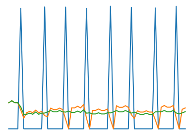
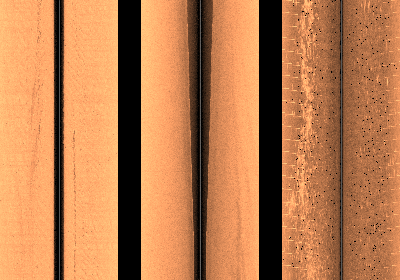
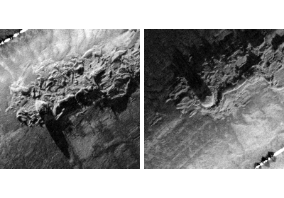
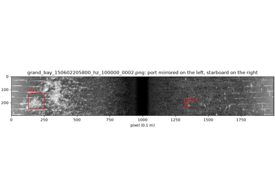
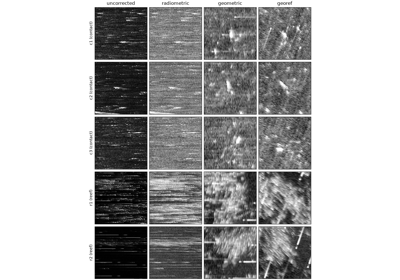
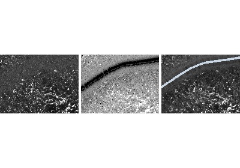
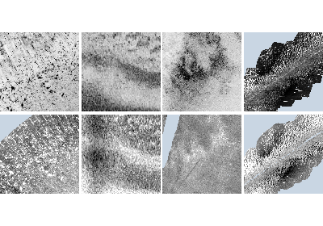

Examples#
Worked walkthroughs on real data. The Guide explains how each part of sidescanpy works; these pages show it doing a job.
Each example below runs sidescanpy on a real, openly licensed recording
that anyone can download, and shows the code, what it prints and the
figure it makes. The pages are built by running the scripts in
examples/gallery/. Two more sections sit alongside them:
Target recognition: two-stage target recognition step by step, from raw data or a target catalog to a trained detector and classifier. Those scripts need a GPU and extra packages, so they are not run when this site is built; each page shows the results of a run.
Example data: every recording the examples use, with its source, size and licence.
Run one yourself with an output directory (the current one by default):
python examples/gallery/plot_correct_a_line.py out/
Plotting needs the viz extra and the GeoTIFF in
Grid to a map the geo extra. The
recordings, their sizes and licences are listed in Example data.

Navigation: held fixes, interpolation and the track

Comparing results across sonars and file formats

Four passes over one wreck: native and north-up

Swath tiles for annotation, and boxes back to targets

Target chips at several corrections and resolutions

Same pings, different chains: recreating a vendor product

Four published chains, four looks; one recorded chain, one scale